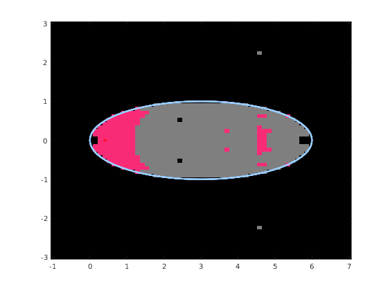

Basins of attraction in computing QT eigenvalues
The computation of eigenvalues of QT matrices (using eig_all or eig_single) relies on a matrix iteration; this function draws the basins of attractions for different choices of such iteration.
More specifically, the following options are available (see [1] for further details):
- Newton's iteration for $\det(WV) = 0$ (Vandermonde version), identified by 'algo' equal to 1.
- Newton's iteration applied to $\det(W[I;G;G^2;\ldots]) = 0$ (Frobenius version). This choice is identified by 'algo' equal to 2.
- Newton's iteration applied to $det(HV-x V)=0$ (Vandermonde version), identified by 'algo' equal to 3.
- Newton's iteration applied to $det(H(G)-x I)=0$ (Frobenius version), identified by 'algo' equal to 4.
The function identifies the basis by different colors in the domain $[x_0, x_1] \times [y_0, y_1]$.
Contents
Syntax
- [B, v, iter] = basins(A, n, x0, x1, y0, y1) creates an $n \times n$ matrix B that contains the number of iterations needed to converge from this starting point; if the point belongs to the continuous spectrum this number is set to 255, to 254 if the limit point belongs to a different component, or 253 if there is no convergence.
- [B, v, iter] = basins(A, n, x0, x1, y0, y1, opts) allows to specify some optional key / value pairs in opts.
The optional parameters are the following: * 'algo' selects the algorithm to analyze (should be an integer from 1 to 4, see above) * 'maxit' limits the number of iterations. * 'epsilon' controls the relative precision for the stopping criterion * 'verbose' enables debugging output if set to true. * 'advpx' enables the use of the Advanpix multiprecisio toolbox with a larger number of digits (the toolbox should be available and installed for this to work.) * 'digits' controls the number of digits to use when 'advpx' is set to true. * 'plotfig' directly plots the data returned in B.
Example
We draw an example with an isolated eigenvalue close to 0.4, with a basin of attraction around it.
A = cqt([3 1], [3 2], 30 * ones(4)); basins(A, 64, -1, 7, -3, 3, 'plotfig', true); hold on; plot(eig_all(A), 'r*');
References
[1] D. A. Bini, B. Iannazzo, B. Meini, J. Meng, L. Robol, Computing eigenvalues of semi-infinite quasi Toeplitz matrices, in preparation, 2022.